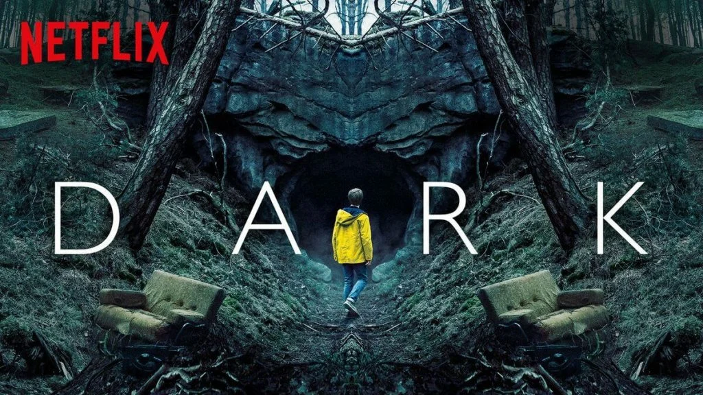
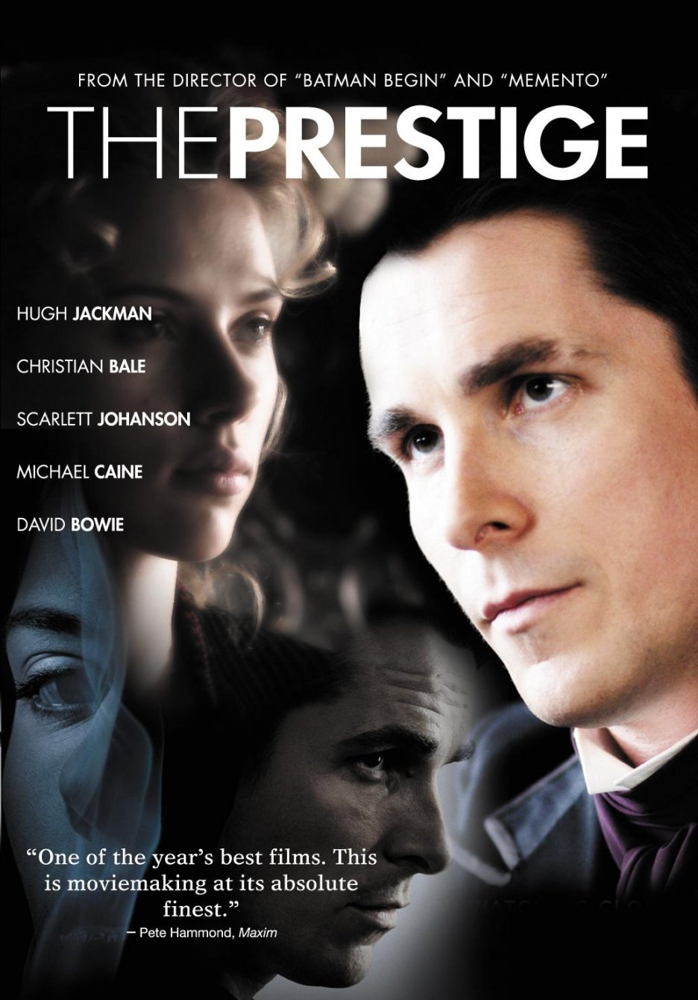
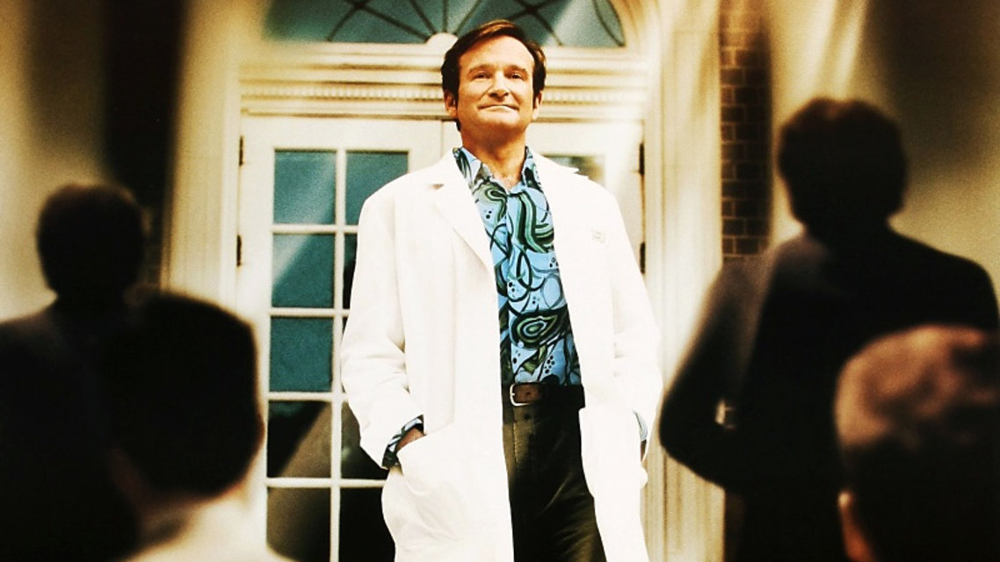
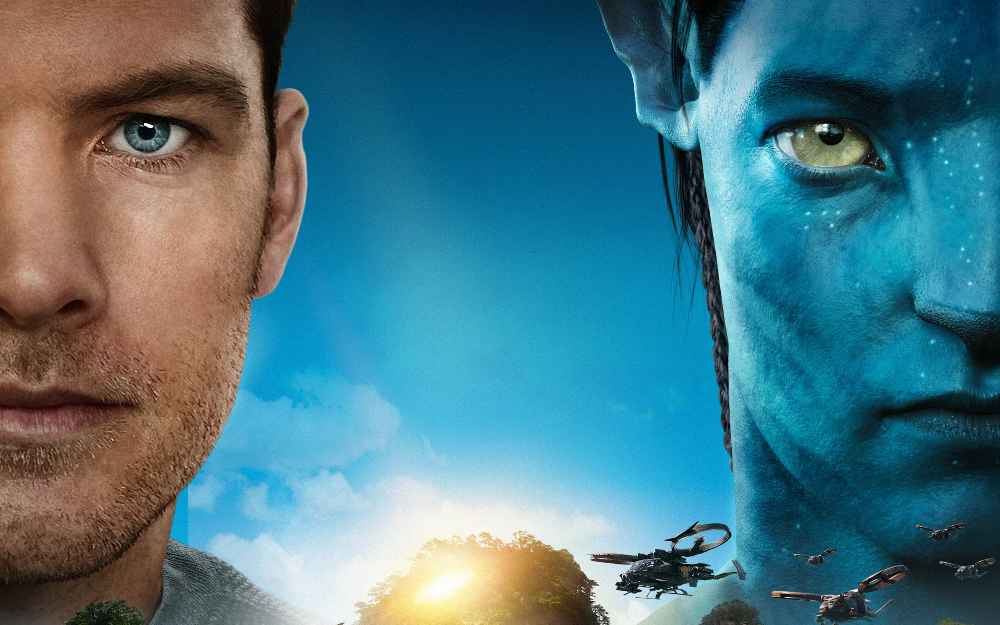
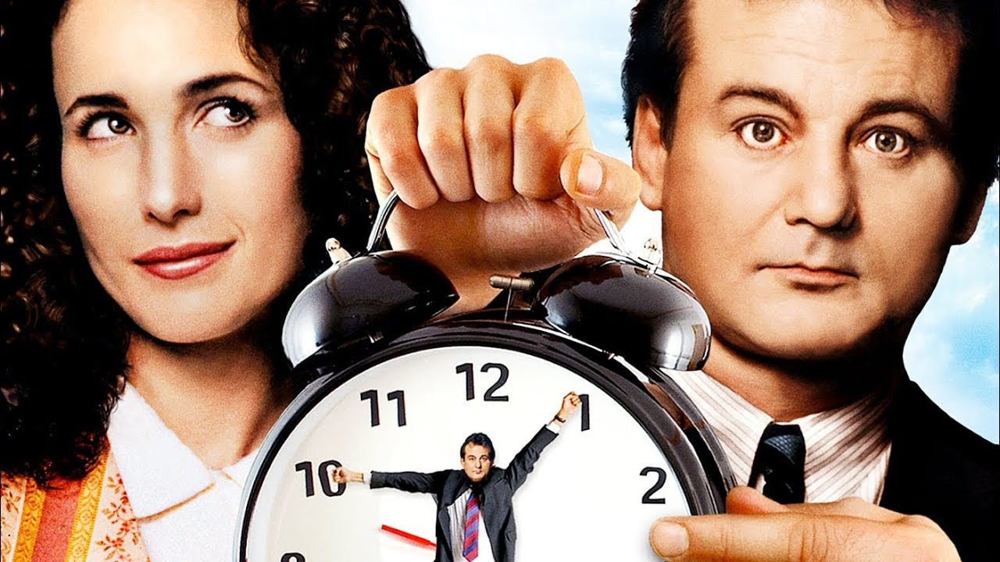
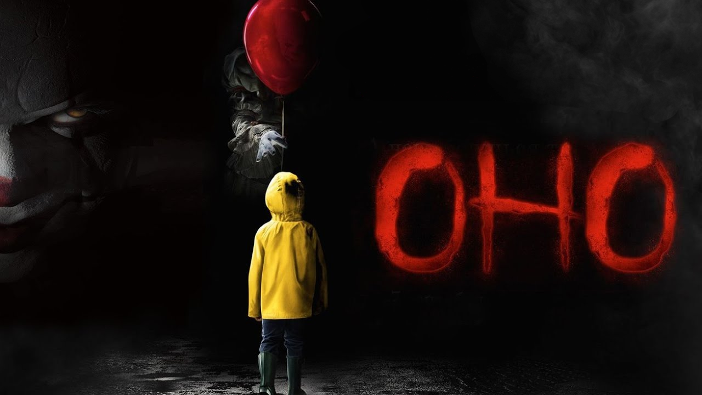

Побег из Шоушенка
Успешный банкир Энди Дюфрейн обвинен в убийстве собственной жены и ее любовника. Оказавшись в тюрьме под названием Шоушенк, он сталкивается с жестокостью и беззаконием, царящими по обе стороны решетки. Каждый, кто попадает в эти стены, становится их рабом до конца жизни. Но Энди, вооруженный живым умом и доброй душой, отказывается мириться с приговором судьбы и начинает разрабатывать невероятно дерзкий план своего освобождения.
Наркоз
Клай Бересфорд вынужден лечь под нож. Однако в процессе операции на сердце он неожиданно приходит в себя. Находясь в парализованном состоянии, будучи не в силах пошевелить ни рукой, ни ногой, он, тем не менее, чувствует каждое касание скальпеля к своей плоти…
Астрал
Джош и Рене переезжают со своими детьми в новый дом, но не успевают толком распаковать вещи, как начинаются странные события. Необъяснимо перемещаются предметы, в детской звучат странные звуки… Но в настоящий ужас приходят родители, когда их десятилетний сын Далтон впадает в кому. Все усилия врачей в больнице помочь мальчику безуспешны.
Гравитация
Доктор Райан Стоун, блестящий специалист в области медицинского инжиниринга, отправляется в свою первую космическую миссию под командованием ветерана астронавтики Мэтта Ковальски, для которого этот полет — последний перед отставкой. Но во время, казалось бы, рутинной работы за бортом случается катастрофа.
Шаттл уничтожен, а Стоун и Ковальски остаются совершенно одни; они находятся в связке друг с другом, и все, что они могут, — это двигаться по орбите в абсолютно черном пространстве без всякой связи с Землей и какой-либо надежды на спасение.

Тьма
Граждане небольшого немецкого городка не подозревают, что совсем скоро судьба преподнесет им неприятный сюрприз. Населенный пункт находится рядом с атомной станцией и многие местные жители работают на данном объекте, но однажды абсолютно бесследно бесследно исчезает подросток по имени Эрик

Престиж
Роберт и Альфред - фокусники-иллюзионисты, которые на рубеже XIX и XX веков соперничали друг с другом в Лондоне. С годами их дружеская конкуренция на профессиональной почве перерастает в настоящую войну. Они готовы на все, чтобы выведать друг у друга секреты фантастических трюков и сорвать их исполнение. Непримиримая вражда, вспыхнувшая между ними, начинает угрожать жизни окружающих их людей…

Целитель Адамс
Познакомьтесь с Целителем Адамсом - доктором, который резко отличается от своих чопорных и важных коллег. Адамс совершил невероятное открытие в современной медицине. Оказывается, лучшим лекарством от любых болезней является смех. И доктор Адамс готов сделать все возможное, чтобы заставить своих пациентов, как, впрочем, и зрителей этой прекрасной картины, смеяться без перерыва!..

Аватар
Джейк Салли - бывший морской пехотинец, прикованный к инвалидному креслу. Несмотря на немощное тело, Джейк в душе по-прежнему остается воином. Он получает задание совершить путешествие в несколько световых лет к базе землян на планете Пандора, где корпорации добывают редкий минерал, имеющий огромное значение для выхода Земли из энергетического кризиса.

День сурка
Телевизионный комментатор Фил Коннорс каждый год приезжает в маленький городок в штате Пенсильвания на празднование Дня сурка. Но на этот раз веселье рискует зайти слишком далеко. Время сыграло с ним злую шутку: оно взяло да и остановилось. Теперь на календаре Фила чернеет одна и та же дата - 2 февраля, из которой он никак не может выбраться. Неунывающий ведущий пытается извлечь выгоду из своего комичного положения: впереди у него уйма времени и безмятежное предсказуемое будущее. Отныне с ним не случится ничего плохого... и ничего хорошего. У Фила осталась одна заветная мечта, простая и незамысловатая - 3 февраля...

Оно
Когда в городке Дерри штата Мэн начинают пропадать дети, несколько ребят сталкиваются со своими величайшими страхами - не только с группой школьных хулиганов, но со злобным клоуном Пеннивайзом, чьи проявления жестокости и список жертв уходят в глубь веков.